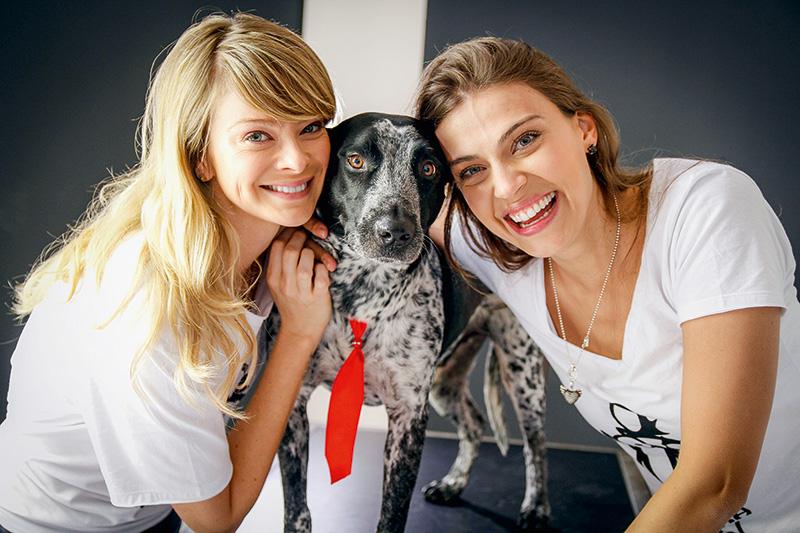

Conheça o trabalho da AMPARA Animal
Em atividade desde 2010, A AMPARA Animal nasceu quando as fundadoras Juliana Camargo e Marcele Becker se uniram por amor e respeito aos animais. Juntas sonharam em criar um projeto para mudar a realidade dos animais rejeitados e abandonados do Brasil.
Já em 2011, com a vinda da diretora de marketing Raquel Facuri, esse sonho começou a se materializar. Com os mesmos ideais e amor incondicional àqueles que não têm voz, iniciaram uma luta em prol da desafiadora e negligenciada causa
Em 2013, recebeu a certificação de OSCIP, Organização da Sociedade Civil de Interesse Público, comprovando sua seriedade e transparência administrativa.
Em 2015 se tornou a instituição que mais ajuda animais no país, ao se tornar uma “ONG mãe” que ampara mais de 450 abrigos cadastrados em nível nacional, que são auxiliados em um sistema de rodízio com ração, medicamentos, vacinas, atendimento veterinário, eventos de adoção e projetos de conscientização. Os parceiros da instituição auxiliam diretamente e mensalmente cerca de 10 mil animais.
São oito anos de trabalho, realizações e grandes conquistas, e é empreendendo socialmente que a AMPARA atua de forma preventiva com seus três principais pilares: adoção, castração e, principalmente, a conscientização, através de projetos educativos voltados para o público infantil e adulto.